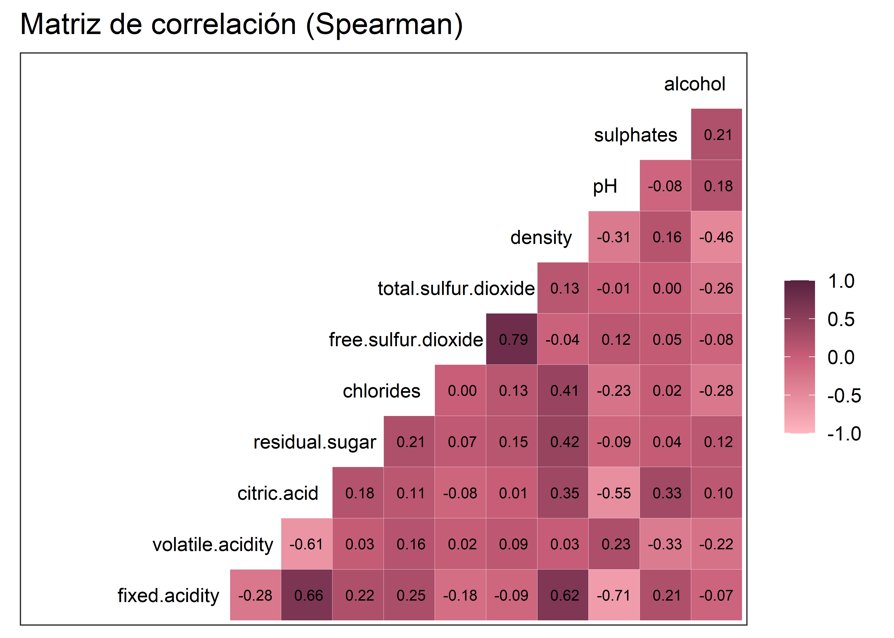
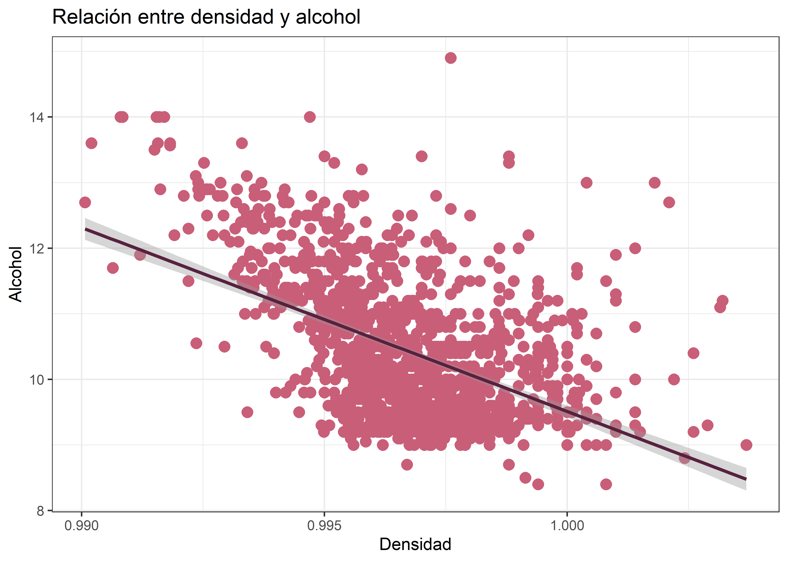
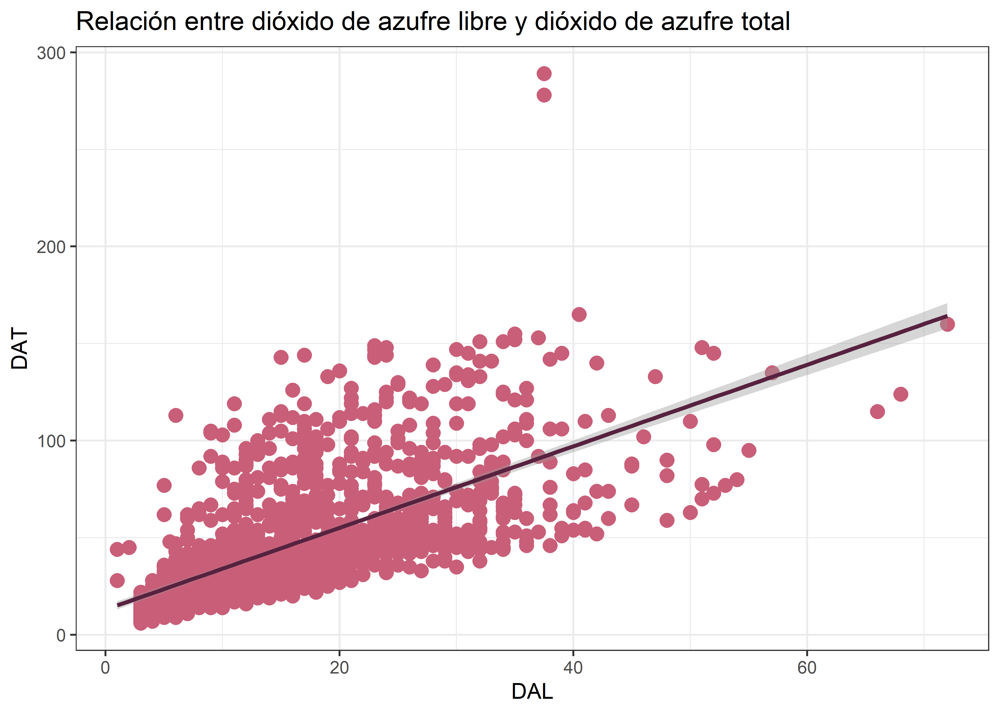
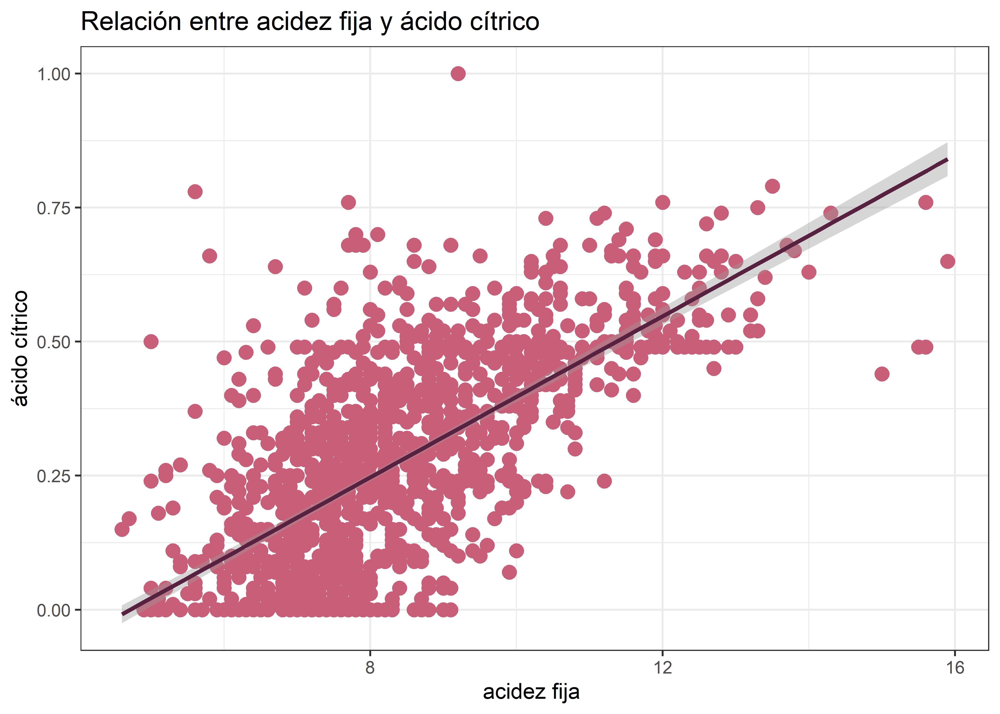
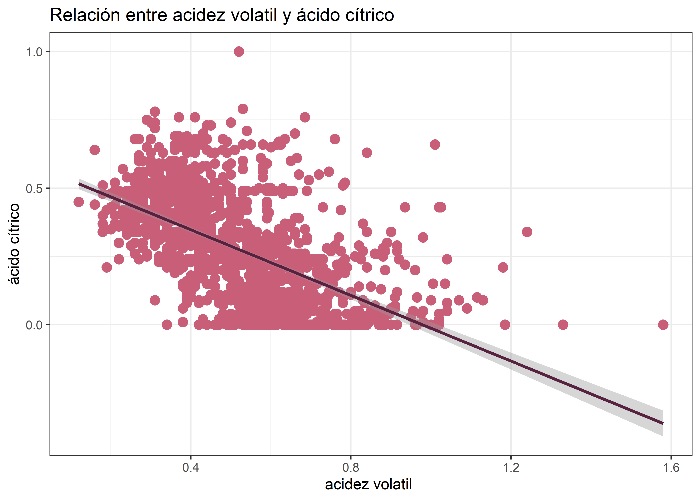

Capítulo 7 Correlación lineal entre variables númericas
En esta sección analizaremos las relaciones entre las variables físico-químicas del vino, todas ellas numéricas, con el fin de identificar asociaciones internas que puedan influir en la calidad. Este análisis no busca correlacionar directamente con la variable quality (que es categórica), sino detectar patrones y posibles colinealidades entre predictores.
Una correlación positiva indica que, a medida que una variable aumenta, la otra también tiende a aumentar; mientras que una correlación negativa indica que, al aumentar una variable, la otra tiende a disminuir. Este paso es fundamental para comprender la estructura del conjunto de datos y seleccionar variables relevantes para análisis posteriores.
7.1 chlorides vs sulphates
datos %>%
ggplot(aes(x = datos$chlorides, y = datos$sulphates)) +
geom_point(color = "#C95E78", size = 3)+
geom_smooth( formula = 'y~x', method = "lm", color = "#57223F")+
labs(title = "Relación entre acido citrico y PH",
x = "Acido citrico ",
y = "PH") +
theme_bw()
7.1.1 Normalidad
##
## Shapiro-Wilk normality test
##
## data: datos$chlorides
## W = 0.48425, p-value < 2.2e-16##
## Shapiro-Wilk normality test
##
## data: datos$sulphates
## W = 0.83304, p-value < 2.2e-16Con una confianza del 95%, se observa que las distribuciones de las variables chlorides (W = 0.48425, p-valor < 2.2e-16) y sulphates (W = 0.83304, p-valor < 2.2e-16) no provienen de una distribución normal.
7.1.2 Correlación Spearman
##
## Spearman's rank correlation rho
##
## data: datos$chlorides and datos$sulphates
## S = 667196985, p-value = 0.4053
## alternative hypothesis: true rho is not equal to 0
## sample estimates:
## rho
## 0.02082548El análisis de correlación de Spearman entre las variables chlorides y sulphates mostró un coeficiente ρ=0.0208, lo que indica una correlación muy baja entre ambas variables. La prueba de significancia (S = 667196985, p-valor = 0.4053) no permitió rechazar la hipótesis nula de ausencia de correlación, lo que implica que la relación observada no es estadísticamente significativa.
7.2 density vs alcohol
datos %>%
ggplot(aes(x = datos$density, y = datos$alcohol)) +
geom_point(color = "#C95E78", size = 3)+
geom_smooth( formula = 'y~x', method = "lm", color = "#57223F")+
labs(title = "Relación entre densidad y alcohol",
x = "Densidad",
y = "Alcohol") +
theme_bw()
7.2.1 Normalidad
##
## Shapiro-Wilk normality test
##
## data: datos$density
## W = 0.99087, p-value = 1.936e-08##
## Shapiro-Wilk normality test
##
## data: datos$alcohol
## W = 0.92884, p-value < 2.2e-16Con una confianza del 95%, se observa que las distribuciones de las variables density (W = 0.99087, p-valor = 1.936e-08) y alcohol (W = 0.92884, p-valor < 2.2e-16) no provienen de una distribución normal.
7.2.2 Correlación Spearman
##
## Spearman's rank correlation rho
##
## data: datos$density and datos$alcohol
## S = 996491017, p-value < 2.2e-16
## alternative hypothesis: true rho is not equal to 0
## sample estimates:
## rho
## -0.4624446El análisis de correlación de Spearman entre density y alcohol mostró un coeficiente ρ=−0.4624, indicando una correlación negativa de magnitud media. La prueba de significancia (S = 996491017, p-valor < 2.2e-16) permite rechazar la hipótesis nula de ausencia de correlación, confirmando que la relación observada es estadísticamente significativa.
7.3 free.sulfur.dioxide vs total.sulfur.dioxide
datos %>%
ggplot(aes(x = datos$free.sulfur.dioxide , y = datos$total.sulfur.dioxide)) +
geom_point(color = "#C95E78", size = 3)+
geom_smooth( formula = 'y~x', method = "lm", color = "#57223F")+
labs(title = "Relación entre dióxido de azufre libre y dióxido de azufre total",
x = "DAL",
y = "DAT") +
theme_bw()
7.3.1 Normalidad
##
## Shapiro-Wilk normality test
##
## data: datos$free.sulfur.dioxide
## W = 0.90184, p-value < 2.2e-16##
## Shapiro-Wilk normality test
##
## data: datos$total.sulfur.dioxide
## W = 0.87322, p-value < 2.2e-16Con una confianza del 95%, las variables chlorides (W = 0.48425, p-valor < 2.2e-16) y sulphates (W = 0.83304, p-valor < 2.2e-16) no provienen de una distribución normal, por lo que se recomienda emplear métodos estadísticos no paramétricos para su análisis.
7.3.2 Correlación Spearman
##
## Spearman's rank correlation rho
##
## data: datos$free.sulfur.dioxide and datos$total.sulfur.dioxide
## S = 143297175, p-value < 2.2e-16
## alternative hypothesis: true rho is not equal to 0
## sample estimates:
## rho
## 0.7896979El análisis de correlación de Spearman mostró un coeficiente ρ=0.7897 entre las variables free.sulfur.dioxide y total.sulfur.dioxide, indicando una correlación positiva alta muy significativa. La prueba de significancia (S = 143297175, p-valor < 2.2e-16) nos permite rechazar la hipótesis nula de ausencia de correlación, confirmando que la relación observada es estadísticamente significativa.
7.4 fixed.acidity vs citric.acid
datos %>%
ggplot(aes(x = datos$fixed.acidity, y = datos$citric.acid)) +
geom_point(color = "#C95E78", size = 3)+
geom_smooth( formula = 'y~x', method = "lm", color = "#57223F")+
labs(title = "Relación entre acidez fija y ácido cítrico",
x = "acidez fija ",
y = "ácido cítrico") +
theme_bw()
7.4.1 Normalidad
##
## Shapiro-Wilk normality test
##
## data: datos$fixed.acidity
## W = 0.94203, p-value < 2.2e-16##
## Shapiro-Wilk normality test
##
## data: datos$citric.acid
## W = 0.95529, p-value < 2.2e-16Con un nivel de confianza del 95%, se concluye que las distribuciones de las variables fixed.acidity (W = 0.94203, p-valor < 2.2e-16) y citric.acid (W = 0.95529, p-valor < 2.2e-16) no provienen de una distribución normal. Por lo tanto, se recomienda utilizar técnicas estadísticas no paramétricas para su análisis.
7.4.2 Correlación Spearman
##
## Spearman's rank correlation rho
##
## data: datos$fixed.acidity and datos$citric.acid
## S = 230507555, p-value < 2.2e-16
## alternative hypothesis: true rho is not equal to 0
## sample estimates:
## rho
## 0.6617084El análisis de correlación de Spearman entre fixed.acidity y citric.acid mostró un coeficiente ρ=0.6617, con un p-valor < 2.2e-16. Esto indica una correlación positiva significativa de magnitud alta, lo que significa que a mayores valores de fixed.acidity, mayores valores de citric.acid y viceversa.
7.5 volatile.acidity vs citric.acid
datos %>%
ggplot(aes(x = datos$volatile.acidity, y = datos$citric.acid)) +
geom_point(color = "#C95E78", size = 3)+
geom_smooth( formula = 'y~x', method = "lm", color = "#57223F")+
labs(title = "Relación entre acidez volatil y ácido cítrico",
x = "acidez volatil ",
y = "ácido cítrico") +
theme_bw()
7.5.1 Normalidad
##
## Shapiro-Wilk normality test
##
## data: datos$volatile.acidity
## W = 0.97434, p-value = 2.693e-16##
## Shapiro-Wilk normality test
##
## data: datos$citric.acid
## W = 0.95529, p-value < 2.2e-16Con una confianza del 95%, se concluye que las variables fixed.acidity, citric.acid y volatile.acidity no provienen de una distribución normal (test Shapiro-Wilk: W = 0.94203, 0.95529 y 0.97434 respectivamente, con p-valores < 0.05).
7.5.2 Correlación Spearman
##
## Spearman's rank correlation rho
##
## data: datos$volatile.acidity and datos$citric.acid
## S = 1097210190, p-value < 2.2e-16
## alternative hypothesis: true rho is not equal to 0
## sample estimates:
## rho
## -0.6102595El análisis de correlación de Spearman entre volatile.acidity y citric.acid mostró un coeficiente ρ=−0.6103, indicando una correlación negativa alta y significativa (p-valor < 2.2e-16). Esto implica que a mayor acidez volátil, menor contenido de ácido cítrico, siendo esta relación estadísticamente significativa.
7.6 Matriz de correlación (Spearman)
datos_num <- datos %>% select(where(is.numeric))
# Visualización con GGally
ggcorr(
datos_num,
method = c("everything", "spearman"),
label = TRUE, # Mostrar coeficientes
label_round = 2, # Redondear a 2 decimales
label_size = 3, # Tamaño de texto
hjust = 0.85, # Ajuste horizontal para evitar sobreposición
layout.exp = 3, # Espaciado para mejorar legibilidad
low = "#FFB6C1", mid = "#C95E78", high = "#57223F" # Paleta personalizada
) +
ggtitle("Matriz de correlación (Spearman)") +
theme_bw(base_size = 14)
Dado que las variables no cumplen normalidad, se utilizó el coeficiente de Spearman. Las correlaciones más relevantes encontradas son:
- free.sulfur.dioxide vs total.sulfur.dioxide (ρ ≈ 0.79) Existe una asociación positiva muy fuerte entre el dióxido de azufre libre y el total, lo que indica que ambas variables están estrechamente relacionadas y aportan información redundante. Esto sugiere que, en análisis predictivos, podría bastar con incluir una de ellas para evitar colinealidad.
- fixed.acidity vs citric.acid (ρ ≈ 0.66) Se observa una correlación positiva moderada: a mayor acidez fija, mayor contenido de ácido cítrico. Esta relación es consistente con la química del vino, ya que ambos parámetros están vinculados al perfil ácido del producto.
- volatile.acidity vs citric.acid (ρ ≈ 0.62) Existe una correlación positiva moderada: cuando aumenta la acidez volátil, también tiende a aumentar el ácido cítrico. Esto indica que estos componentes están relacionados y podrían influir conjuntamente en la percepción sensorial y calidad del vino.